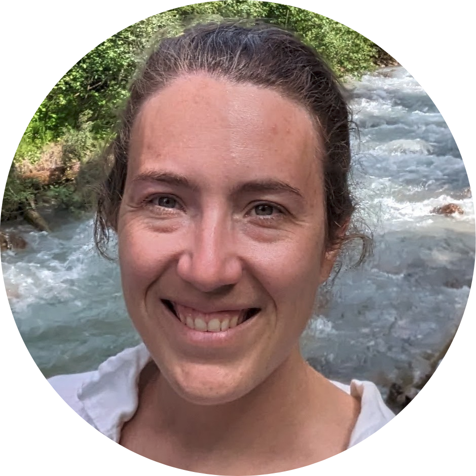

|
Juliette Bertrand
I relocated to New York and am looking for opportunities. If you want to reach out, feel free to email me. I am particularly interested in opportunities in video understanding for sport analysis, video generation or the impact of distribution shifts in real world settings, specifically for 3D/4D reconstruction.
Previously, I was a research engineer at the Thoth team collaborating with Professor Julien Mairal , Dr. James Hollingsworth and Dr. Sophie Giffard-Roisin . Previously, I was a researcher at the Czech Technical University in Prague, member of the VRG group and collaborating with Professor Giorgos Tolias and Dr Yannis Kalantidis at Naverlabs Europe . During my time with them, I focused on the challenging task of representation learning and matching for video understanding, particularly when dealing with limited annotated data.
I actively contributed to various applied research projects deployed either as demo or in production environment, including:
- re-identifying soccer players through jersey number recognition;
- real-time ball tracking in low-resolution sports videos;
- predicting the primary topic of webpages from limited, noisy annotations (built from scratch and deployed in production for the 2018 EuroCup);
- detecting and reducing the influence of traffic spikes webpage view counts (deployed within the forecast tool);
- understanding daily human activities in home environments (Mobile Mii) ;
- inferring disparity maps around individuals' faces.
In 2013, I successfully completed my master's degree at Ecole Centrale Lyon, and I also graduated with distinction in Image and Signal Processing from the University of Lyon.
Outside of work, I enjoy hiking, dancing, acting, traveling, and embracing new cultures. I have a deep interest for cinema and the performing arts, to the extent that I even collaborated with a group of musical aficionados to create a musical entirely from scratch.
Email /
Google Scholar /
Twitter /
Github
|

|
{kind=link}